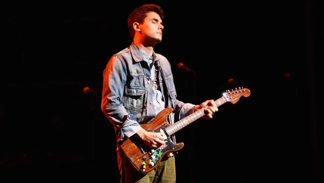
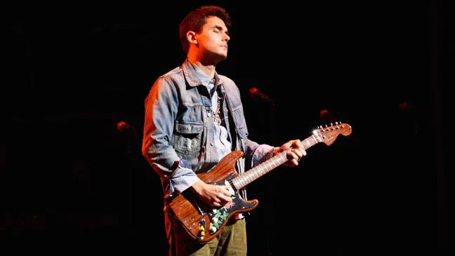

All Favorites at a Glance
 

Favorite Movie: The Social Network
My favorite movie currently would have to be The Social Network, starring Jesse Eisenberg and Andrew Garfield. The movie is about Mark Zuckerberg and the creation of Facebook. In the movie, he is able to simultaneously become the most popular and most hated man on the planet. This movie got me into coding when I first saw it, and ever since then it has stuck with me through the years.
Lucas Score: 9.7/10
IMDb Score: 7.8/10
Favorite Book: The Hitchhiker's Guide to the Galaxy
My Favorite book I've read in the past years has to be The Hitchhiker's Guide to the Galaxy. It follows Arthur Dent and his friend Ford Perfect as they escape Earth and get into trouble along the way. This book made me laugh out loud many times, and even has hidden philosophical messages throughout.
Lucas's Score: 8.9/10
Book Review Score: 5/5
Favorite Sport: Baseball
Baseball has been my favorite sport for as long as I can remember. I've always played baseball as my main sport, and even play it here at IIT. Even I can admit that there are many boring lulls in the games, but it is worth it for the many exciting parts of the game.
Lucas's Score: 9.2/10
Favorite Artist: John Mayer
As a guitar player myself, I would say that my favorite musician would have to be John Mayer. The way he play's guitar is second to none and his songs are really well put together a super catchy at times. You can hear the soul in his music when you listen.
Lucas's Score: 9.5/10
Favorite Place Visited: Hawaii
My favorite place I've been to has to be Hawaii. When we were there, we snorkeled, hiked, and even rode one of the longest zip lines in the world! It was a really beautiful place and I wouldn't hesitate to go again.
Lucas's Score: 10/10